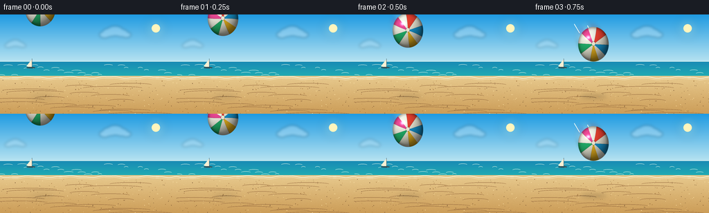
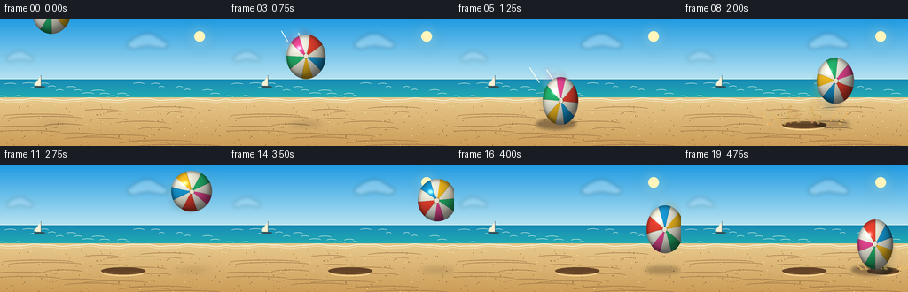

CODING AGENTS AS PIXEL WORLD MODELS
traex/GPT-5.6-Sol · phygen_030
点击播放 · 原生 RGB 像素
此结果可播放，但该运行尚未通过最终提交审核。页面展示不代表评测通过。
逐轮保存的候选
回放视频、检查图与代码变化。
每份候选均可单独播放。实际图片检查记录在下方工具轨迹中。
候选 01播放与检查图
点击播放 · 原生 RGB 像素

展开代码变化
--- 上一保存版本
+++ 本次保存版本
@@ -0,0 +1,302 @@
+from pathlib import Path
+import math
+import numpy as np
+from PIL import Image, ImageDraw, ImageFilter
+import artifact_io
+
+# Deterministic, procedural text-to-video render.
+W, H, N = 256, 144, 20
+S = 4
+WW, HH = W*S, H*S
+rng = np.random.default_rng(30030)
+
+
+def sc(v):
+ return int(round(v*S))
+
+
+def build_background():
+ y = np.arange(HH)[:, None]
+ x = np.arange(WW)[None, :]
+ arr = np.zeros((HH, WW, 3), dtype=np.float32)
+
+ # Deep-to-warm tropical sky.
+ horizon = sc(73)
+ f = np.clip(y / horizon, 0, 1)
+ top = np.array([31, 155, 226], np.float32)
+ bot = np.array([193, 232, 242], np.float32)
+ sky = top[None, None, :] * (1-f[..., None]) + bot[None, None, :] * f[..., None]
+ arr[:] = sky
+
+ # Ocean bands and distant haze.
+ oy0, oy1 = sc(68), sc(94)
+ of = np.clip((y-oy0) / max(1, oy1-oy0), 0, 1)
+ ocean_top = np.array([24, 138, 181], np.float32)
+ ocean_bot = np.array([34, 178, 178], np.float32)
+ ocean = ocean_top[None, None, :] * (1-of[..., None]) + ocean_bot[None, None, :] * of[..., None]
+ arr[oy0:oy1] = ocean[oy0:oy1]
+
+ # Golden dry sand with gentle depth gradient and fixed fine grain.
+ sy = sc(89)
+ sf = np.clip((y-sy)/(HH-sy), 0, 1)
+ sand_top = np.array([232, 202, 142], np.float32)
+ sand_bot = np.array([204, 157, 88], np.float32)
+ sand = sand_top[None, None, :] * (1-sf[..., None]) + sand_bot[None, None, :] * sf[..., None]
+ noise_small = rng.normal(0, 2.3, (HH, WW, 1))
+ sand = sand + noise_small
+ arr[sy:] = sand[sy:]
+
+ arr = np.clip(arr, 0, 255).astype(np.uint8)
+ im = Image.fromarray(arr, 'RGB').convert('RGBA')
+ d = ImageDraw.Draw(im, 'RGBA')
+
+ # Soft clouds, deliberately kept far from the ball's main path.
+ def cloud(cx, cy, size, alpha=80):
+ layer = Image.new('RGBA', (WW, HH), (0,0,0,0))
+ cd = ImageDraw.Draw(layer, 'RGBA')
+ for ox, oy, rr in [(-1.25, .1, .65),(-.65,-.18,.85),(0,-.35,1.0),(.75,-.12,.78),(1.35,.12,.58)]:
+ box = [sc(cx+(ox*size)-rr*size), sc(cy+(oy*size)-rr*size*.6),
+ sc(cx+(ox*size)+rr*size), sc(cy+(oy*size)+rr*size*.6)]
+ cd.ellipse(box, fill=(255,255,255,alpha))
+ layer = layer.filter(ImageFilter.GaussianBlur(sc(2.0)))
+ im.alpha_composite(layer)
+ cloud(166, 28, 12, 65)
+ cloud(22, 44, 8, 50)
+
+ # Sun glow and solar disk.
+ glow = Image.new('RGBA', (WW, HH), (0,0,0,0))
+ gd = ImageDraw.Draw(glow, 'RGBA')
+ for rad, alpha in [(17,10),(12,18),(8,28)]:
+ gd.ellipse([sc(225-rad),sc(20-rad),sc(225+rad),sc(20+rad)], fill=(255,239,169,alpha))
+ glow = glow.filter(ImageFilter.GaussianBlur(sc(5)))
+ im.alpha_composite(glow)
+ d = ImageDraw.Draw(im, 'RGBA')
+ d.ellipse([sc(219),sc(14),sc(231),sc(26)], fill=(255,245,189,215))
+
+ # Far ocean details: horizon and rhythmic whitecaps.
+ d.line([(0,sc(68)),(WW,sc(68))], fill=(221,244,240,125), width=sc(.8))
+ for k in range(24):
+ yy = 74 + (k % 5)*3.6 + rng.uniform(-.7,.7)
+ xx = (k*29 + 13) % 270 - 8
+ length = rng.uniform(6,15)
+ d.arc([sc(xx),sc(yy-1.2),sc(xx+length),sc(yy+2)], 192, 345,
+ fill=(231,247,232,105), width=max(1,sc(.55)))
+ # Foamy waterline.
+ pts=[]
+ for xx in np.linspace(-5,261,60):
+ yy = 91.1 + 1.1*math.sin(xx*.11) + .45*math.sin(xx*.29)
+ pts.append((sc(xx),sc(yy)))
+ d.line(pts, fill=(246,241,212,205), width=sc(1.3))
+ d.line([(a,b+sc(2.2)) for a,b in pts], fill=(248,233,194,90), width=sc(.7))
+
+ # Distant sail gives scale without competing with the action.
+ d.polygon([(sc(46),sc(65)),(sc(46),sc(77)),(sc(38),sc(75))], fill=(248,240,212,155))
+ d.line([(sc(46),sc(64)),(sc(46),sc(78))], fill=(63,91,104,150), width=sc(.6))
+ d.ellipse([sc(38),sc(76),sc(51),sc(78)], fill=(48,80,87,145))
+
+ # Sand contours and tiny grains.
+ for k in range(17):
+ yy = 101 + k*2.7 + rng.uniform(-.8,.8)
+ x0 = rng.uniform(-25,180)
+ length = rng.uniform(35,110)
+ d.arc([sc(x0),sc(yy-2),sc(x0+length),sc(yy+3)], 185, 350,
+ fill=(147,103,60,20 + (k%3)*7), width=max(1,sc(.45)))
+ for k in range(210):
+ xx = rng.uniform(0,256); yy = rng.uniform(95,144)
+ shade = tuple(int(v) for v in rng.choice([(109,75,44,50),(255,230,171,55),(157,107,54,40)]))
+ r = rng.uniform(.16,.42)
+ d.ellipse([sc(xx-r),sc(yy-r),sc(xx+r),sc(yy+r)], fill=shade)
+
+ return im
+
+BASE = build_background()
+
+# Fixed trajectory: forceful descent, dramatic impact, elastic rebound, softer second contact.
+CX = np.array([58,66,77,89,103,120,139,157,174,190,204,216,225,232,237,239,238,234,228,219], float)
+CY = np.array([-8,6,23,43,67,93,108.5,94,70,51,38,30,27,31,40,54,73,95,107,90], float)
+RX = np.array([22,22,22,22,21,20,35,20,21,22,23,23,23,23,22,22,21,20,30,20], float)
+RY = np.array([25,25,25,25,27,27,11.5,28,26,24,23,23,23,23,24,25,27,25,13,28], float)
+
+# Coherent grains from first and second impacts.
+particle_rng = np.random.default_rng(3030)
+P1=[]
+for _ in range(54):
+ side = particle_rng.choice([-1,1])
+ vx = side*particle_rng.uniform(2.5,10.5)
+ vy = -particle_rng.uniform(3.5,14.0)
+ P1.append((vx,vy,particle_rng.uniform(.35,1.05),particle_rng.uniform(0,.7)))
+P2=[]
+for _ in range(28):
+ side = particle_rng.choice([-1,1])
+ P2.append((side*particle_rng.uniform(2,7),-particle_rng.uniform(2.5,8),particle_rng.uniform(.3,.8),particle_rng.uniform(0,.55)))
+
+
+def draw_crater(im, cx, age, strength=1.0):
+ if age < 0: return
+ d=ImageDraw.Draw(im,'RGBA')
+ fade=max(.32, 1-age*.045)
+ # dark rear lip, light front lip, and fine radial displacement marks
+ d.ellipse([sc(cx-25*strength),sc(116),sc(cx+25*strength),sc(124)], fill=(99,67,39,int(35*fade)))
+ d.arc([sc(cx-25*strength),sc(117),sc(cx+25*strength),sc(126)], 8,172,
+ fill=(254,221,157,int(115*fade)), width=sc(1.0))
+ d.arc([sc(cx-23*strength),sc(116),sc(cx+23*strength),sc(123)], 185,355,
+ fill=(103,69,38,int(75*fade)), width=sc(.8))
+ for j in range(7):
+ dx=(j-3)*6.5*strength
+ d.line([(sc(cx+dx*.45),sc(120.5)),(sc(cx+dx),sc(121.5+abs(dx)*.025))],
+ fill=(119,80,42,int(42*fade)),width=max(1,sc(.45)))
+
+
+def draw_shadow(im, i):
+ bottom_gap = max(0, 120-(CY[i]+RY[i]))
+ closeness = math.exp(-bottom_gap/26)
+ sw = RX[i]*(.78 + .35*closeness)
+ sh = 2.2 + 3.7*closeness
+ # Slightly left due to sun at upper right.
+ sx = CX[i]-5 + min(bottom_gap*.10, 8)
+ layer=Image.new('RGBA',(WW,HH),(0,0,0,0))
+ d=ImageDraw.Draw(layer,'RGBA')
+ d.ellipse([sc(sx-sw),sc(119-sh),sc(sx+sw),sc(119+sh)], fill=(62,44,29,int(35+90*closeness)))
+ layer=layer.filter(ImageFilter.GaussianBlur(sc(1.7+bottom_gap*.025)))
+ im.alpha_composite(layer)
+
+
+def draw_particles(im, age, cx, plist, strength=1.0, foreground=False):
+ if age < 0 or age > 5.3: return
+ layer=Image.new('RGBA',(WW,HH),(0,0,0,0))
+ d=ImageDraw.Draw(layer,'RGBA')
+ aa=age+.18
+ # Expanding low dust cloud.
+ alpha=int(max(0, 80-age*15)*strength)
+ if alpha>0:
+ for q in range(8):
+ off=(q-3.5)*(2.8+age*2.3)*strength
+ yy=119-age*(1.3+(q%3)*.35)
+ rr=(3.8+age*2.0)*strength*(.65+.15*(q%3))
+ d.ellipse([sc(cx+off-rr),sc(yy-rr*.38),sc(cx+off+rr),sc(yy+rr*.38)],
+ fill=(235,195,119,max(4,alpha//3)))
+ layer=layer.filter(ImageFilter.GaussianBlur(sc(1.3+age*.45)))
+ im.alpha_composite(layer)
+ layer=Image.new('RGBA',(WW,HH),(0,0,0,0)); d=ImageDraw.Draw(layer,'RGBA')
+ fade=max(0,1-age/5.5)
+ for idx,(vx,vy,r,delay) in enumerate(plist):
+ a=max(0,aa-delay)
+ if a<=0: continue
+ px=cx+vx*a*strength
+ py=119+vy*a+1.55*a*a
+ if py>126 or px<-3 or px>259: continue
+ al=int((175 if foreground else 140)*fade)
+ col=(196+idx%3*9,145+idx%4*8,73+idx%5*5,al)
+ rr=r*(1+.06*a)*strength
+ d.ellipse([sc(px-rr),sc(py-rr),sc(px+rr),sc(py+rr)], fill=col)
+ if abs(vy)>9 and age<2.2:
+ d.line([(sc(px),sc(py)),(sc(px-vx*.17),sc(py-vy*.17))], fill=(219,173,97,al//2), width=max(1,sc(.35)))
+ im.alpha_composite(layer)
+
+
+def ball_layer(cx,cy,rx,ry,rotation, alpha_scale=1.0):
+ # Per-pixel sphere with clean panel seams, specularity and ellipsoidal squash.
+ pad=4
+ x0=max(0,int((cx-rx-pad)*S)); x1=min(WW,int((cx+rx+pad)*S)+1)
+ y0=max(0,int((cy-ry-pad)*S)); y1=min(HH,int((cy+ry+pad)*S)+1)
+ if x1<=x0 or y1<=y0:
+ return Image.new('RGBA',(WW,HH),(0,0,0,0))
+ yy,xx=np.mgrid[y0:y1,x0:x1]
+ u=(xx/S-cx)/rx; v=(yy/S-cy)/ry
+ q=u*u+v*v
+ edge=np.clip((1.025-q)*28,0,1)
+ ang=rotation
+ ca,sa=math.cos(ang),math.sin(ang)
+ ur=ca*u+sa*v; vr=-sa*u+ca*v
+ # Curved panel mapping rather than flat pie wedges.
+ theta=np.arctan2(vr + .15*ur*ur*np.sign(vr), ur + .10*vr)
+ sectors=np.floor(((theta+math.pi)/(2*math.pi))*10).astype(int)%10
+ palette=np.array([
+ [247,248,235],[241,67,49],[247,245,226],[23,157,218],[246,246,231],
+ [250,193,34],[248,246,226],[36,184,111],[247,246,231],[239,74,151]
+ ],dtype=float)
+ rgb=palette[sectors]
+ # Fine inset seam at each panel boundary.
+ frac=((theta+math.pi)/(2*math.pi)*10)%1
+ seam=np.clip(np.minimum(frac,1-frac)/.055,0,1)
+ rgb=rgb*(.80+.20*seam[...,None])
+ nz=np.sqrt(np.clip(1-q,0,1))
+ # Upper-left/front key, lower rim bounce light.
+ light=np.clip(-.37*u-.50*v+.77*nz,0,1)
+ shade=.45+.55*light
+ rim=np.clip((q-.67)/.33,0,1)
+ shade*=1-.23*rim
+ rgb*=shade[...,None]
+ # Gloss highlight.
+ spec=np.exp(-(((u+.34)/.20)**2+((v+.39)/.15)**2)*2.5)*(nz>.15)
+ rgb=rgb*(1-spec[...,None]*.12)+255*spec[...,None]*.72
+ # A small rubber valve/cap at panel convergence, deforms naturally.
+ cap=((ur+.025)**2/(.115**2)+(vr+.015)**2/(.115**2))<1
+ cap_edge=((ur+.025)**2/(.14**2)+(vr+.015)**2/(.14**2))<1
+ rgb[cap_edge]=rgb[cap_edge]*.66
+ rgb[cap]=np.array([246,241,219])*(.70+.3*light[cap,None])
+ # Soft contact darkening along the compressed bottom edge.
+ if ry < 17:
+ contact=np.clip((v-.62)/.38,0,1)
+ rgb*= (1-.22*contact[...,None])
+ alpha=(edge*255*alpha_scale).astype(np.uint8)
+ rgb=np.clip(rgb,0,255).astype(np.uint8)
+ patch=np.dstack([rgb,alpha])
+ out=Image.new('RGBA',(WW,HH),(0,0,0,0))
+ out.paste(Image.fromarray(patch,'RGBA'),(x0,y0))
+ return out
+
+
+def draw_motion_blur(im,i):
+ if i<1: return
+ dx=CX[i]-CX[i-1]; dy=CY[i]-CY[i-1]
+ speed=math.hypot(dx,dy)
+ if speed<12: return
+ # Two translucent prior-position impressions, clipped as soft colorful ghosts.
+ for k,a in [(0.28,.12),(0.55,.055)]:
+ ghost=ball_layer(CX[i]-dx*k,CY[i]-dy*k,RX[i]*.94,RY[i]*.94,
+ math.radians(17*i+8)-k*.25,a)
+ ghost=ghost.filter(ImageFilter.GaussianBlur(sc(1.1+k*1.2)))
+ im.alpha_composite(ghost)
+ d=ImageDraw.Draw(im,'RGBA')
+ # Air streaks emphasize a powerful throw immediately before impact.
+ if 3<=i<=6:
+ for off in [-11,8]:
+ x=CX[i]-dx*.75+off; y=CY[i]-dy*.75+off*.12
+ d.line([(sc(x),sc(y)),(sc(x-dx*.65),sc(y-dy*.65))], fill=(255,255,244,60), width=sc(.7))
+
+
+def make_frame(i):
+ im=BASE.copy()
+ # Persistent surface deformation should lie behind airborne spray and ball.
+ if i>=6: draw_crater(im,139,i-6,1.0)
+ if i>=18: draw_crater(im,228,i-18,.72)
+ draw_shadow(im,i)
+ # Rear spray first, then ball, then a few near-camera grains.
+ if i>=6: draw_particles(im,i-6,139,P1,1.0,False)
+ if i>=18: draw_particles(im,i-18,228,P2,.8,False)
+ draw_motion_blur(im,i)
+ rotation=math.radians(12+19*i)
+ ball=ball_layer(CX[i],CY[i],RX[i],RY[i],rotation,1.0)
+ im.alpha_composite(ball)
+ # Foreground sand flecks crossing the silhouette sell actual contact.
+ if i in (6,7):
+ fg=[p for j,p in enumerate(P1) if j%4==0]
+ draw_particles(im,i-6,139,fg,1.0,True)
+ if i==18:
+ fg=[p for j,p in enumerate(P2) if j%3==0]
+ draw_particles(im,0,228,fg,.8,True)
+ # Brief bright compression glint at the exact first collision.
+ if i==6:
+ d=ImageDraw.Draw(im,'RGBA')
+ d.arc([sc(104),sc(111),sc(174),sc(124)], 193,347, fill=(255,231,173,150), width=sc(1.1))
+ # Downsample produces polished antialiasing and hides procedural harshness.
+ return np.asarray(im.convert('RGB').resize((W,H),Image.Resampling.LANCZOS),dtype=np.uint8)
+
+
+def main():
+ frames=np.stack([make_frame(i) for i in range(N)],axis=0)
+ artifact_io.save(frames,Path(__file__).resolve().parent)
+
+if __name__=='__main__':
+ main()
候选 02播放与检查图
点击播放 · 原生 RGB 像素

展开代码变化
--- 上一保存版本
+++ 本次保存版本
@@ -167,7 +167,7 @@
d=ImageDraw.Draw(layer,'RGBA')
aa=age+.18
# Expanding low dust cloud.
- alpha=int(max(0, 80-age*15)*strength)
+ alpha=int(max(0, 112-age*18)*strength)
if alpha>0:
for q in range(8):
off=(q-3.5)*(2.8+age*2.3)*strength
@@ -185,13 +185,35 @@
px=cx+vx*a*strength
py=119+vy*a+1.55*a*a
if py>126 or px<-3 or px>259: continue
- al=int((175 if foreground else 140)*fade)
+ al=int((225 if foreground else 188)*fade)
col=(196+idx%3*9,145+idx%4*8,73+idx%5*5,al)
- rr=r*(1+.06*a)*strength
+ rr=r*(1.45+.08*a)*strength
d.ellipse([sc(px-rr),sc(py-rr),sc(px+rr),sc(py+rr)], fill=col)
if abs(vy)>9 and age<2.2:
- d.line([(sc(px),sc(py)),(sc(px-vx*.17),sc(py-vy*.17))], fill=(219,173,97,al//2), width=max(1,sc(.35)))
+ d.line([(sc(px),sc(py)),(sc(px-vx*.20),sc(py-vy*.20))], fill=(235,188,105,al//2), width=max(1,sc(.55)))
im.alpha_composite(layer)
+
+
+def draw_contact_crown(im, age, cx, scale=1.0):
+ """A coherent crown of displaced sand emerging from both contact edges."""
+ if age < 0 or age > 3.2:
+ return
+ d=ImageDraw.Draw(im,'RGBA')
+ a=age+.28
+ fade=max(0, 1-age/3.5)
+ for side in (-1,1):
+ for k in range(9):
+ speed=(2.7+k*.58)*scale
+ lift=(3.0+(k%5)*1.55)*scale
+ origin=cx+side*(21+1.25*k)*scale
+ px=origin+side*speed*a
+ py=119-lift*a+1.28*a*a
+ rr=(.55+(k%3)*.24)*scale
+ col=(229+2*(k%3),171+4*(k%4),86+4*(k%2),int(215*fade))
+ d.ellipse([sc(px-rr),sc(py-rr),sc(px+rr),sc(py+rr)],fill=col)
+ if age<1.35 and k%2==0:
+ d.line([(sc(origin),sc(118.7)),(sc(px),sc(py))],
+ fill=(242,197,115,int(105*fade)),width=max(1,sc(.5)))
def ball_layer(cx,cy,rx,ry,rotation, alpha_scale=1.0):
@@ -275,6 +297,8 @@
# Rear spray first, then ball, then a few near-camera grains.
if i>=6: draw_particles(im,i-6,139,P1,1.0,False)
if i>=18: draw_particles(im,i-18,228,P2,.8,False)
+ if i>=6: draw_contact_crown(im,i-6,139,1.0)
+ if i>=18: draw_contact_crown(im,i-18,228,.72)
draw_motion_blur(im,i)
rotation=math.radians(12+19*i)
ball=ball_layer(CX[i],CY[i],RX[i],RY[i],rotation,1.0)
可观测工具轨迹
实际执行的命令与返回图片。
命令 1exit 0
/bin/bash -lc "cat prompt.txt && printf '\\n--- GENERATION_RULES.md ---\\n' && cat GENERATION_RULES.md && printf '\\n--- task_spec.json ---\\n' && cat task_spec.json"
命令 2exit 0
/bin/bash -lc "find . -maxdepth 3 -type f -printf '%p\\n' | sort && printf '\\n--- binaries ---\\n' && command -v ffmpeg && command -v python3 && command -v blender || true"
命令 3exit 0
/bin/bash -lc "cat artifact_io.py && python3 - <<'PY'
try:
import PIL; print('PIL', PIL.__version__)
except Exception as e: print('PIL err',e)
try:
import numpy; print('numpy', numpy.__version__)
except Exception as e: print('numpy err',e)
PY"命令 4exit 1
/bin/bash -lc "cat > generate.py <<'PY'
from pathlib import Path
import math
import numpy as np
from PIL import Image, ImageDraw, ImageFilter
import artifact_io
# Deterministic, procedural text-to-video render.
W, H, N = 256, 144, 20
S = 4
WW, HH = W*S, H*S
rng = np.random.default_rng(30030)
def sc(v):
return int(round(v*S))
def build_background():
y = np.arange(HH)[:, None]
x = np.arange(WW)[None, :]
arr = np.zeros((HH, WW, 3), dtype=np.float32)
# Deep-to-warm tropical sky.
horizon = sc(73)
f = np.clip(y / horizon, 0, 1)
top = np.array([31, 155, 226], np.float32)
bot = np.array([193, 232, 242], np.float32)
sky = top[None, None, :] * (1-f[..., None]) + bot[None, None, :] * f[..., None]
arr[:] = sky
# Ocean bands and distant haze.
oy0, oy1 = sc(68), sc(94)
of = np.clip((y-oy0) / max(1, oy1-oy0), 0, 1)
ocean_top = np.array([24, 138, 181], np.float32)
ocean_bot = np.array([34, 178, 178], np.float32)
ocean = ocean_top[None, None, :] * (1-of[..., None]) + ocean_bot[None, None, :] * of[..., None]
arr[oy0:oy1] = ocean[oy0:oy1]
# Golden dry sand with gentle depth gradient and fixed fine grain.
sy = sc(89)
sf = np.clip((y-sy)/(HH-sy), 0, 1)
sand_top = np.array([232, 202, 142], np.float32)
sand_bot = np.array([204, 157, 88], np.float32)
sand = sand_top[None, None, :] * (1-sf[..., None]) + sand_bot[None, None, :] * sf[..., None]
noise_small = rng.normal(0, 2.3, (HH, WW, 1))
sand += noise_small
arr[sy:] = sand[sy:]
arr = np.clip(arr, 0, 255).astype(np.uint8)
im = Image.fromarray(arr, 'RGB').convert('RGBA')
d = ImageDraw.Draw(im, 'RGBA')
# Soft clouds, deliberately kept far from the ball's main path.
def cloud(cx, cy, size, alpha=80):
layer = Image.new('RGBA', (WW, HH), (0,0,0,0))
cd = ImageDraw.Draw(layer, 'RGBA')
for ox, oy, rr in [(-1.25, .1, .65),(-.65,-.18,.85),(0,-.35,1.0),(.75,-.12,.78),(1.35,.12,.58)]:
box = [sc(cx+(ox*size)-rr*size), sc(cy+(oy*size)-rr*size*.6),
sc(cx+(ox*size)+rr*size), sc(cy+(oy*size)+rr*size*.6)]
cd.ellipse(box, fill=(255,255,255,alpha))
layer = layer.filter(ImageFilter.GaussianBlur(sc(2.0)))
im.alpha_composite(layer)
cloud(166, 28, 12, 65)
cloud(22, 44, 8, 50)
# Sun glow and solar disk.
glow = Image.new('RGBA', (WW, HH), (0,0,0,0))
gd = ImageDraw.Draw(glow, 'RGBA')
for rad, alpha in [(17,10),(12,18),(8,28)]:
gd.ellipse([sc(225-rad),sc(20-rad),sc(225+rad),sc(20+rad)], fill=(255,239,169,alpha))
glow = glow.filter(ImageFilter.GaussianBlur(sc(5)))
im.alpha_composite(glow)
d = ImageDraw.Draw(im, 'RGBA')
d.ellipse([sc(219),sc(14),sc(231),sc(26)], fill=(255,245,189,215))
# Far ocean details: horizon and rhythmic whitecaps.
d.line([(0,sc(68)),(WW,sc(68))], fill=(221,244,240,125), width=sc(.8))
for k in range(24):
yy = 74 + (k % 5)*3.6 + rng.uniform(-.7,.7)
xx = (k*29 + 13) % 270 - 8
length = rng.uniform(6,15)
d.arc([sc(xx),sc(yy-1.2),sc(xx+length),sc(yy+2)], 192, 345,
fill=(231,247,232,105), width=max(1,sc(.55)))
# Foamy waterline.
pts=[]
for xx in np.linspace(-5,261,60):
yy = 91.1 + 1.1*math.sin(xx*.11) + .45*math.sin(xx*.29)
pts.append((sc(xx),sc(yy)))
d.line(pts, fill=(246,241,212,205), width=sc(1.3))
d.line([(a,b+sc(2.2)) for a,b in pts], fill=(248,233,194,90), width=sc(.7))
# Distant sail gives scale without competing with the action.
d.polygon([(sc(46),sc(65)),(sc(46),sc(77)),(sc(38),sc(75))], fill=(248,240,212,155))
d.line([(sc(46),sc(64)),(sc(46),sc(78))], fill=(63,91,104,150), width=sc(.6))
d.ellipse([sc(38),sc(76),sc(51),sc(78)], fill=(48,80,87,145))
# Sand contours and tiny grains.
for k in range(17):
yy = 101 + k*2.7 + rng.uniform(-.8,.8)
x0 = rng.uniform(-25,180)
length = rng.uniform(35,110)
d.arc([sc(x0),sc(yy-2),sc(x0+length),sc(yy+3)], 185, 350,
fill=(147,103,60,20 + (k%3)*7), width=max(1,sc(.45)))
for k in range(210):
xx = rng.uniform(0,256); yy = rng.uniform(95,144)
shade = rng.choice([(109,75,44,50),(255,230,171,55),(157,107,54,40)])
r = rng.uniform(.16,.42)
d.ellipse([sc(xx-r),sc(yy-r),sc(xx+r),sc(yy+r)], fill=shade)
return im
BASE = build_background()
# Fixed trajectory: forceful descent, dramatic impact, elastic rebound, softer second contact.
CX = np.array([58,66,77,89,103,120,139,157,174,190,204,216,225,232,237,239,238,234,228,219], float)
CY = np.array([-8,6,23,43,67,93,108.5,94,70,51,38,30,27,31,40,54,73,95,107,90], float)
RX = np.array([22,22,22,22,21,20,35,20,21,22,23,23,23,23,22,22,21,20,30,20], float)
RY = np.array([25,25,25,25,27,27,11.5,28,26,24,23,23,23,23,24,25,27,25,13,28], float)
# Coherent grains from first and second impacts.
particle_rng = np.random.default_rng(3030)
P1=[]
for _ in range(54):
side = particle_rng.choice([-1,1])
vx = side*particle_rng.uniform(2.5,10.5)
vy = -particle_rng.uniform(3.5,14.0)
P1.append((vx,vy,particle_rng.uniform(.35,1.05),particle_rng.uniform(0,.7)))
P2=[]
for _ in range(28):
side = particle_rng.choice([-1,1])
P2.append((side*particle_rng.uniform(2,7),-particle_rng.uniform(2.5,8),particle_rng.uniform(.3,.8),particle_rng.uniform(0,.55)))
def draw_crater(im, cx, age, strength=1.0):
if age < 0: return
d=ImageDraw.Draw(im,'RGBA')
fade=max(.32, 1-age*.045)
# dark rear lip, light front lip, and fine radial displacement marks
d.ellipse([sc(cx-25*strength),sc(116),sc(cx+25*strength),sc(124)], fill=(99,67,39,int(35*fade)))
d.arc([sc(cx-25*strength),sc(117),sc(cx+25*strength),sc(126)], 8,172,
fill=(254,221,157,int(115*fade)), width=sc(1.0))
d.arc([sc(cx-23*strength),sc(116),sc(cx+23*strength),sc(123)], 185,355,
fill=(103,69,38,int(75*fade)), width=sc(.8))
for j in range(7):
dx=(j-3)*6.5*strength
d.line([(sc(cx+dx*.45),sc(120.5)),(sc(cx+dx),sc(121.5+abs(dx)*.025))],
fill=(119,80,42,int(42*fade)),width=max(1,sc(.45)))
def draw_shadow(im, i):
bottom_gap = max(0, 120-(CY[i]+RY[i]))
closeness = math.exp(-bottom_gap/26)
sw = RX[i]*(.78 + .35*closeness)
sh = 2.2 + 3.7*closeness
# Slightly left due to sun at upper right.
sx = CX[i]-5 + min(bottom_gap*.10, 8)
layer=Image.new('RGBA',(WW,HH),(0,0,0,0))
d=ImageDraw.Draw(layer,'RGBA')
d.ellipse([sc(sx-sw),sc(119-sh),sc(sx+sw),sc(119+sh)], fill=(62,44,29,int(35+90*closeness)))
layer=layer.filter(ImageFilter.GaussianBlur(sc(1.7+bottom_gap*.025)))
im.alpha_composite(layer)
def draw_particles(im, age, cx, plist, strength=1.0, foreground=False):
if age < 0 or age > 5.3: return
layer=Image.new('RGBA',(WW,HH),(0,0,0,0))
d=ImageDraw.Draw(layer,'RGBA')
aa=age+.18
# Expanding low dust cloud.
alpha=int(max(0, 80-age*15)*strength)
if alpha>0:
for q in range(8):
off=(q-3.5)*(2.8+age*2.3)*strength
yy=119-age*(1.3+(q%3)*.35)
rr=(3.8+age*2.0)*strength*(.65+.15*(q%3))
d.ellipse([sc(cx+off-rr),sc(yy-rr*.38),sc(cx+off+rr),sc(yy+rr*.38)],
fill=(235,195,119,max(4,alpha//3)))
layer=layer.filter(ImageFilter.GaussianBlur(sc(1.3+age*.45)))
im.alpha_composite(layer)
layer=Image.new('RGBA',(WW,HH),(0,0,0,0)); d=ImageDraw.Draw(layer,'RGBA')
fade=max(0,1-age/5.5)
for idx,(vx,vy,r,delay) in enumerate(plist):
a=max(0,aa-delay)
if a<=0: continue
px=cx+vx*a*strength
py=119+vy*a+1.55*a*a
if py>126 or px<-3 or px>259: continue
al=int((175 if foreground else 140)*fade)
col=(196+idx%3*9,145+idx%4*8,73+idx%5*5,al)
rr=r*(1+.06*a)*strength
d.ellipse([sc(px-rr),sc(py-rr),sc(px+rr),sc(py+rr)], fill=col)
if abs(vy)>9 and age<2.2:
d.line([(sc(px),sc(py)),(sc(px-vx*.17),sc(py-vy*.17))], fill=(219,173,97,al//2), width=max(1,sc(.35)))
im.alpha_composite(layer)
def ball_layer(cx,cy,rx,ry,rotation, alpha_scale=1.0):
# Per-pixel sphere with clean panel seams, specularity and ellipsoidal squash.
pad=4
x0=max(0,int((cx-rx-pad)*S)); x1=min(WW,int((cx+rx+pad)*S)+1)
y0=max(0,int((cy-ry-pad)*S)); y1=min(HH,int((cy+ry+pad)*S)+1)
if x1<=x0 or y1<=y0:
return Image.new('RGBA',(WW,HH),(0,0,0,0))
yy,xx=np.mgrid[y0:y1,x0:x1]
u=(xx/S-cx)/rx; v=(yy/S-cy)/ry
q=u*u+v*v
edge=np.clip((1.025-q)*28,0,1)
ang=rotation
ca,sa=math.cos(ang),math.sin(ang)
ur=ca*u+sa*v; vr=-sa*u+ca*v
# Curved panel mapping rather than flat pie wedges.
theta=np.arctan2(vr + .15*ur*ur*np.sign(vr), ur + .10*vr)
sectors=np.floor(((theta+math.pi)/(2*math.pi))*10).astype(int)%10
palette=np.array([
[247,248,235],[241,67,49],[247,245,226],[23,157,218],[246,246,231],
[250,193,34],[248,246,226],[36,184,111],[247,246,231],[239,74,151]
],dtype=float)
rgb=palette[sectors]
# Fine inset seam at each panel boundary.
frac=((theta+math.pi)/(2*math.pi)*10)%1
seam=np.clip(np.minimum(frac,1-frac)/.055,0,1)
rgb=rgb*(.80+.20*seam[...,None])
nz=np.sqrt(np.clip(1-q,0,1))
# Upper-left/front key, lower rim bounce light.
light=np.clip(-.37*u-.50*v+.77*nz,0,1)
shade=.45+.55*light
rim=np.clip((q-.67)/.33,0,1)
shade*=1-.23*rim
rgb*=shade[...,None]
# Gloss highlight.
spec=np.exp(-(((u+.34)/.20)**2+((v+.39)/.15)**2)*2.5)*(nz>.15)
rgb=rgb*(1-spec[...,None]*.12)+255*spec[...,None]*.72
# A small rubber valve/cap at panel convergence, deforms naturally.
cap=((ur+.025)**2/(.115**2)+(vr+.015)**2/(.115**2))<1
cap_edge=((ur+.025)**2/(.14**2)+(vr+.015)**2/(.14**2))<1
rgb[cap_edge]=rgb[cap_edge]*.66
rgb[cap]=np.array([246,241,219])*(.70+.3*light[cap,None])
# Soft contact darkening along the compressed bottom edge.
if ry < 17:
contact=np.clip((v-.62)/.38,0,1)
rgb*= (1-.22*contact[...,None])
alpha=(edge*255*alpha_scale).astype(np.uint8)
rgb=np.clip(rgb,0,255).astype(np.uint8)
patch=np.dstack([rgb,alpha])
out=Image.new('RGBA',(WW,HH),(0,0,0,0))
out.paste(Image.fromarray(patch,'RGBA'),(x0,y0))
return out
def draw_motion_blur(im,i):
if i<1: return
dx=CX[i]-CX[i-1]; dy=CY[i]-CY[i-1]
speed=math.hypot(dx,dy)
if speed<12: return
# Two translucent prior-position impressions, clipped as soft colorful ghosts.
for k,a in [(0.28,.12),(0.55,.055)]:
ghost=ball_layer(CX[i]-dx*k,CY[i]-dy*k,RX[i]*.94,RY[i]*.94,
math.radians(17*i+8)-k*.25,a)
ghost=ghost.filter(ImageFilter.GaussianBlur(sc(1.1+k*1.2)))
im.alpha_composite(ghost)
d=ImageDraw.Draw(im,'RGBA')
# Air streaks emphasize a powerful throw immediately before impact.
if 3<=i<=6:
for off in [-11,8]:
x=CX[i]-dx*.75+off; y=CY[i]-dy*.75+off*.12
d.line([(sc(x),sc(y)),(sc(x-dx*.65),sc(y-dy*.65))], fill=(255,255,244,60), width=sc(.7))
def make_frame(i):
im=BASE.copy()
# Persistent surface deformation should lie behind airborne spray and ball.
if i>=6: draw_crater(im,139,i-6,1.0)
if i>=18: draw_crater(im,228,i-18,.72)
draw_shadow(im,i)
# Rear spray first, then ball, then a few near-camera grains.
if i>=6: draw_particles(im,i-6,139,P1,1.0,False)
if i>=18: draw_particles(im,i-18,228,P2,.8,False)
draw_motion_blur(im,i)
rotation=math.radians(12+19*i)
ball=ball_layer(CX[i],CY[i],RX[i],RY[i],rotation,1.0)
im.alpha_composite(ball)
# Foreground sand flecks crossing the silhouette sell actual contact.
if i in (6,7):
fg=[p for j,p in enumerate(P1) if j%4==0]
draw_particles(im,i-6,139,fg,1.0,True)
if i==18:
fg=[p for j,p in enumerate(P2) if j%3==0]
draw_particles(im,0,228,fg,.8,True)
# Brief bright compression glint at the exact first collision.
if i==6:
d=ImageDraw.Draw(im,'RGBA')
d.arc([sc(104),sc(111),sc(174),sc(124)], 193,347, fill=(255,231,173,150), width=sc(1.1))
# Downsample produces polished antialiasing and hides procedural harshness.
return np.asarray(im.convert('RGB').resize((W,H),Image.Resampling.LANCZOS),dtype=np.uint8)
def main():
frames=np.stack([make_frame(i) for i in range(N)],axis=0)
artifact_io.save(frames,Path(__file__).resolve().parent)
if __name__=='__main__':
main()
PY
python3 generate.py
python3 - <<'PY'
from pathlib import Path
import numpy as np
from PIL import Image
p=np.load('pixels.npz')['pixels']
print('pixels',p.shape,p.dtype,'range',hex(int(p.min())),hex(int(p.max())))
print('frames',len(list(Path('frames').glob('*.png'))),Image.open('frames/00.png').size,Image.open('frames/00.png').mode)
PY"命令 5exit 1
/bin/bash -lc "python3 generate.py && python3 - <<'PY'
from pathlib import Path
import numpy as np
from PIL import Image
p=np.load('pixels.npz')['pixels']
print('pixels',p.shape,p.dtype,'range',hex(int(p.min())),hex(int(p.max())))
print('frames',len(list(Path('frames').glob('*.png'))),Image.open('frames/00.png').size,Image.open('frames/00.png').mode)
for i in [0,4,5,6,7,10,14,17,18,19]:
a=np.asarray(Image.open(f'frames/{i:02d}.png'))
print(i, round(float(a.mean()),2), round(float(a.std()),2))
PY"命令 6exit 0
/bin/bash -lc "python3 generate.py && python3 - <<'PY'
from pathlib import Path
import numpy as np
from PIL import Image
p=np.load('pixels.npz')['pixels']
print('pixels',p.shape,p.dtype,'range',hex(int(p.min())),hex(int(p.max())))
print('frames',len(list(Path('frames').glob('*.png'))),Image.open('frames/00.png').size,Image.open('frames/00.png').mode)
for i in [0,4,5,6,7,10,14,17,18,19]:
a=np.asarray(Image.open(f'frames/{i:02d}.png'))
print(i, round(float(a.mean()),2), round(float(a.std()),2))
PY"命令 7exit 0
/bin/bash -lc "python3 generate.py && python3 - <<'PY'
import ast, pathlib, numpy as np
from PIL import Image
ast.parse(pathlib.Path('generate.py').read_text())
frames=[]
for i in range(20):
a=np.asarray(Image.open(f'frames/{i:02d}.png'))
assert a.shape==(144,256,3) and a.dtype==np.uint8
frames.append(a)
f=np.stack(frames)
assert f.shape==(20,144,256,3)
# Motion check: every neighboring frame must change substantially.
diff=np.mean(np.abs(f[1:].astype(np.int16)-f[:-1].astype(np.int16)),axis=(1,2,3))
print('shape/dtype',f.shape,f.dtype,'neighbor diff min/max',round(float(diff.min()),3),round(float(diff.max()),3))
print('outputs',[(p.name,p.stat().st_size) for p in map(pathlib.Path,['pixels.npz','index.html','inspection.png'])])
PY"保存候选 2 份；完成命令 7 次；可验证图片返回 0 张。原始 API 响应与完整日志保留在本地。